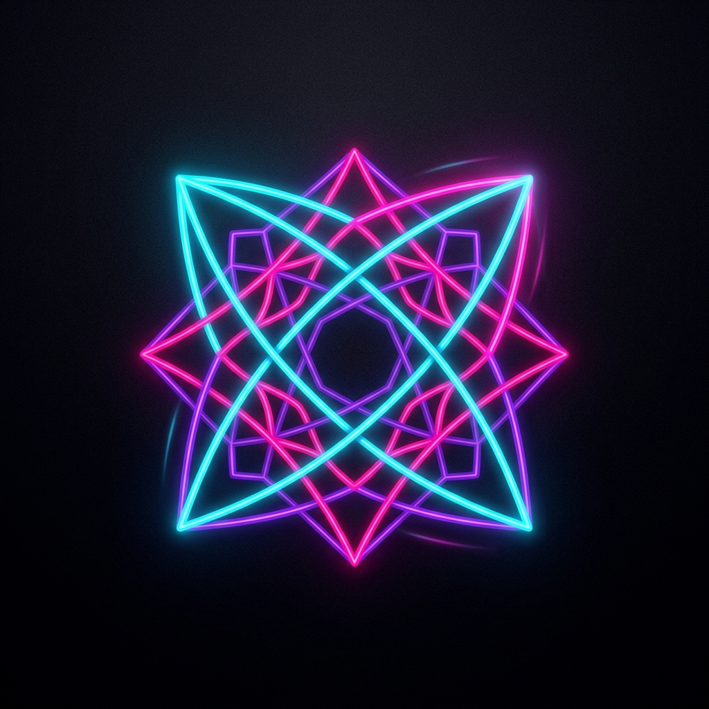

STIMULI
Active Pattern
INITIALIZING...
Hand Tracking
WAITING FOR CAMERA...
CYBER NEON
SPACE to change
FPS: 0 | PARTICLES: 0
Hands Apart
Constellation
Hands Close
Mandala
Rotate Hands
Spiral Galaxy
Weave Hands
Woven Tapestry
Pinch Gesture
Sacred Geometry
Single Hand
Flower
Flip Hand
Mirror Flip
Press 'H' for Help
STIMULI
Initializing Hand Detection...
STIMULI COMMANDS
SPACEBAR
Cycle Themes
'H' Key
Toggle Help
'R' Key
Reset Camera
'P' Key
Pause/Resume
'S' Key
Save Screenshot
ESC
Close Help
Move your hands in front of the camera to weave digital neon patterns.
CLOSE